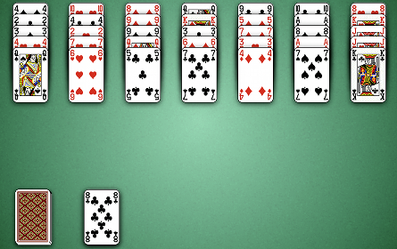
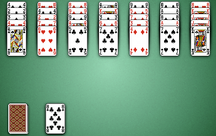

How to Play Golf
Game Setup
Stock: The stock is the pile of face down cards in the bottom left corner of the board. When the player
clicks on the stock, a card is dealt face up to the foundation.
Foundations: The foundation is the pile of face up cards to the right of the stock.
Tableau: The tableau are the 7 piles of face up cards stacked along the top of the table.

Foundations: The foundation is the pile of face up cards to the right of the stock.
Tableau: The tableau are the 7 piles of face up cards stacked along the top of the table.

Rules
Golf is played with a single deck of cards. The goal of the game is to place all the cards in the 7 tableau
into the foundation. When the game begins, the foundation is empty and an initial card must be placed into the
foundation from either the stock or the top of one of the tableau columns. Any card may be chosen as the initial card.
Once a card is in the foundation, cards may be moved from the tablea into the foundation if their face value is one more
or one less than that of the card on top of the foundation. In the image above, we have an 8 of clubs on top of the
foundation, so we may move either the 7 of clubs or 7 of spades from the tableau into the foundation. If a 9 were on top
of one of the tableau piles, that 9 could also be moved to the foundation.
Ace is low in Golf and only a 2 may be played when an Ace is on top of the foundation. King is high and no card may be played on top of a King in the foundation. If you place a King into the foundation, you must draw a card from the stock. If you can't make any more moves from the tableau, you may also draw a card from the stock. Once the stock is empty and no more moves are possible, the game is over.
Ace is low in Golf and only a 2 may be played when an Ace is on top of the foundation. King is high and no card may be played on top of a King in the foundation. If you place a King into the foundation, you must draw a card from the stock. If you can't make any more moves from the tableau, you may also draw a card from the stock. Once the stock is empty and no more moves are possible, the game is over.
Scoring
The game begins with a score of 35 and every card moved from the tableau into the foundation
subtracts one point from your score.